Principal Investigator
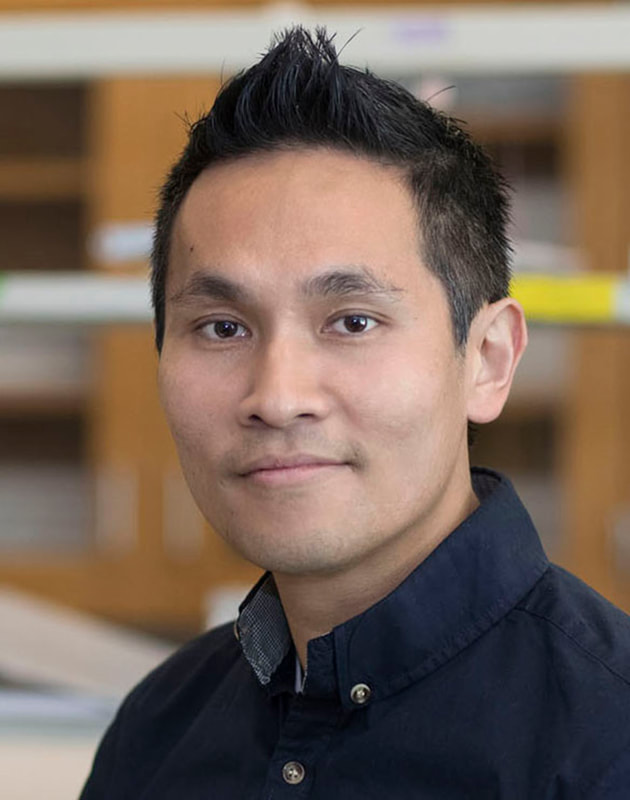
Ku-Lung (Ken) Hsu, Ph.D.
Principal Investigator
Associate Professor
Stephen F. and Fay Evans Martin Endowed Professorship in Chemistry
CPRIT Scholar
Department of Chemistry, University of Texas at Austin
100 E 24th St, Austin, TX 78712 | NHB 6.406
Office: 512-232-1764
ken.hsu@austin.utexas.edu
Awards & Honors
- CPRIT Recruitment of Rising Stars
- Emerging Leader Award from The Mark Foundation for Cancer Research
- NSF CAREER
- Melanoma Research Alliance Young Investigator Award
- DOD Peer Reviewed Cancer Research Program Career Development Award
- NIH Pathway to Independence Award
Lab Manager
Anting Chen, Ph.D. (2023 – Present)
Where are you from? Fuzhou, China
Education:
Ph.D. Material Chemistry, Binghamton University
B.S. Macromolecule Material & Engineering, Shandong University
Hobbies: volunteering, music (vocal), crafts
Favorite element: carbon
anting.chen@austin.utexas.edu
Research Scientists
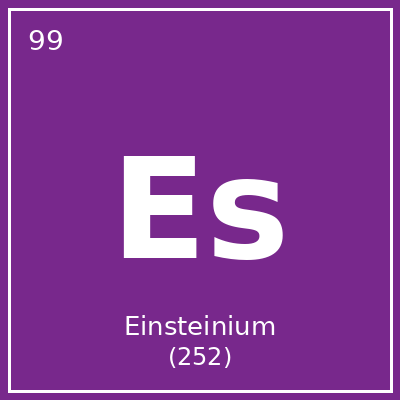
Emily Ayers (2023 – Present)
AYERS_MARKERWhere are you from? Texas
Education:
B.S. Genetics and Genomics, University of Texas at Austin
Favorite molecule or organism: ribosome
e.ayers@utexas.edu
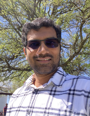
Sagar Vaidya (2023 – Present)
Where are you from? India
Education:
Ph.D. Chemical Sciences, National Chemical Laboratory Pune, India
M.S. Organic Chemistry, University of Pune, India
B.S. Chemistry, University of Pune, India
Hobbies: yoga
Favorite organism or molecule: any chiral molecule
sagar.vaidya@utexas.edu
R. Justin Grams (2021 – Present)
Where are you from? Manassas, VA
Education:
Ph.D. Organic Chemistry, Virginia Tech
B.S. Biochemistry with Minor in Chemistry, Virginia Tech
Hobbies: running, dogs (I have many)
Favorite organism or molecule: organic molecules containing boron
rjg3473@utexas.edu
Postdoctoral Fellows
Xiaoding Jiang (2021 – Present)
Where are you from? Hunan, China
Education:
Postdoc., Medicinal Chemistry, The Chinese University of Hong Kong
Ph.D., Organic Chemistry, Sun Yat-Sen University
M.Med, Pharmaceutical Science, Central South University
B.E. Pharmaceutical Engineering, Hainan University
Hobbies: hiking, running, tennis
Favorite organism or molecule: mystery molecules
xiaoding.jiang@austin.utexas.edu
Zhihong Li (2022 – Present)
Where are you from? Shaanxi, China
Education:
Ph.D. Medicinal Chemistry & Pharmacology, China Pharmaceutical University
M.S. Medicinal Chemistry, China Pharmaceutical University
B.S. Traditional Chinese Pharmacology, China Pharmaceutical University
Hobbies: basketball, soccer
Favorite organism or molecule: dopamine
zhihongli@austin.utexas.edu
Minhaj Shaikh (2021 – Present)
Where are you from? India
Education:
Ph.D. Chemical Biology, IISER Pune
M.S. Savitribai Phule Pune University
B.S. Chemistry, Savitribai Phule Pune University
Hobbies: cricket, badminton, cooking, movies
Favorite organism or molecule: C24:0 Lysophosphatidylserine (Lyso-PS)
minhaj.shaikh@austin.utexas.edu
Gibae Kim (2024 – Present)
Where are you from? Republic of Korea
Education:
Ph.D. Medicinal Chemistry, Seoul National University
B.S. Chemistry Education, Seoul National University
Hobbies: soccer, board games, cooking
Favorite organism or molecule: adenosine
gibae.kim@austin.utexas.edu
Zhuoheng Li (2025 – Present)
Where are you from? China
Education:
Ph.D. Chemistry, University of Iowa
B.S. Applied Chemistry, QUST
Hobbies: casual reading
zhuoheng.li@austin.utexas.edu
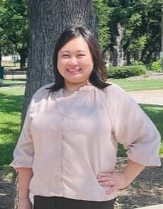
Yu Ching Wong (2025 – Present)
Where are you from? Hong Kong
Education:
Ph.D. Organic Chemistry/Medicinal Chemistry, Baylor University
B.S. Chemistry, Texas A&M University
Hobbies: eating good food
Favorite organism or molecule: potassium xanthate
yuching.wong@austin.texas.edu
Graduate Students
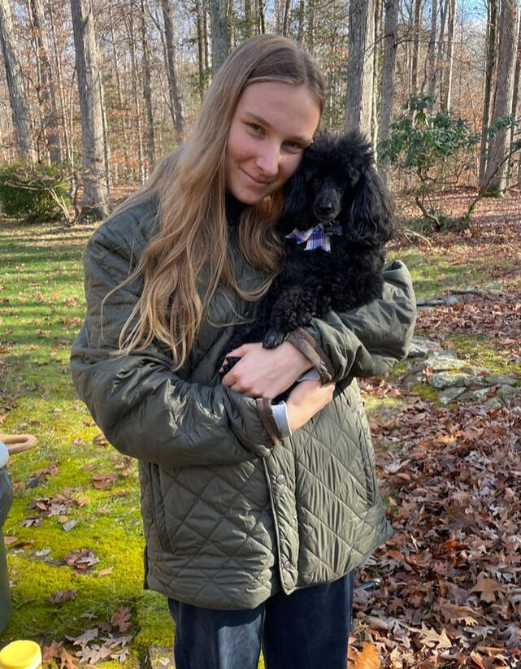
Madeleine Ware (2021 – Present)
Where are you from? Fredericksburg, VA
Education:
M.S. University of Virginia
B.S. Biochemistry, Southern Adventist University
Hobbies: climbing, skiing (all kinds)
Favorite molecule or organism: My dog, Hobbes
mware@utexas.edu
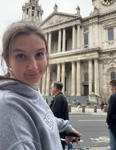
Payton Lowrey (2023 – Present)
Where are you from? St. Louis, MO
Education:
B.A. Chemistry, Grinnell College
Hobbies: crocheting, printmaking, volleyball
Favorite organism or molecule: 1-octen-3-one
lowreypa@utexas.edu
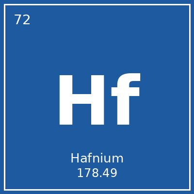
Mikayla Horvath (2023 – Present)
Where are you from? Doylestown, PA
Education:
B.S. Chemistry, Bucknell University
Hobbies: running, hiking, reading
Favorite organism or molecule: caffeine
mikaylahorvath@utexas.edu
Surya Pravo Mookherjee (2023 – Present)
Where are you from? Kolkata, India
Education:
M.S. Chemical Sciences, JNCASR Bangalore
B.S. Chemistry, Presidency University, Kolkata
Hobbies: singing, listening to music, cooking
Favorite organism or molecule: vanillin
suryapravo@utexas.edu
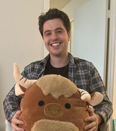
Wes Wolfe (2023 – Present)
Where are you from? Minnesota
Education:
B.S. Chemistry, University of St. Thomas
Hobbies: pottery, hiking, tennis, cooking, & board games
Favorite organism or molecule: formic acid
weswolfe@utexas.edu
Yen-Ting Chen (2023 – Present)
Where are you from? Taipei, Taiwan
Education:
B.S. Biotechnology, Minor in Applied Chemistry, National Chiao Tung University
Hobbies: baking, karaoke, running
Favorite organism or molecule: antibodies
seuluvyc@utexas.edu
John Meinert (2024 – Present)
Where are you from? Houston, TX
Education:
B.S. Physiological Science, B.A. Public Affairs, UCLA
Hobbies: rock climbing, making music
johnmeinert@utexas.edu
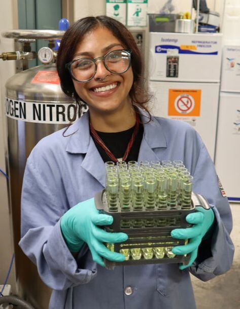
Alyssa Gomez (2025 – Present)
Where are you from? San Diego, CA
Education:
B.S. Chemistry, emphasis in Biochemistry, San Diego State University
Hobbies: listening to live music, crocheting, meditation & yoga
Favorite organism or molecule: thalidomide
aag6346@eid.utexas.edu
Tobias Jonson (2025 – Present)
Where are you from? Reading, PA
Education:
B.S. Bioengineering & Biochemistry, Northeastern University
Hobbies: running, writing, music
Favorite organism or molecule: peregrine falcon
tjonson@utexas.edu
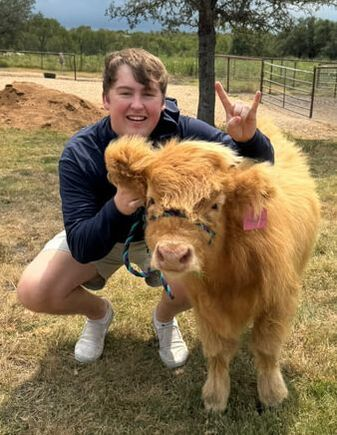
Cameron Muniz (2025 – Present)
Where are you from? Gloucester, MA
Education:
B.A. Chemistry, Cornell University
Hobbies: watching sports, golfing, movies
Favorite organism or molecule: biotin
cmuniz@utexas.edu
Undergraduate Researcher
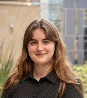
Scout Dawson (2024 – Present)
Where are you from? Houston, TX
Education: Majoring in Chemistry (4th year)
Hobbies: fishing, trap & skeet, and playing terraria
Favorite organism or molecule: cadaverine
brysonsdawson@utexas.edu